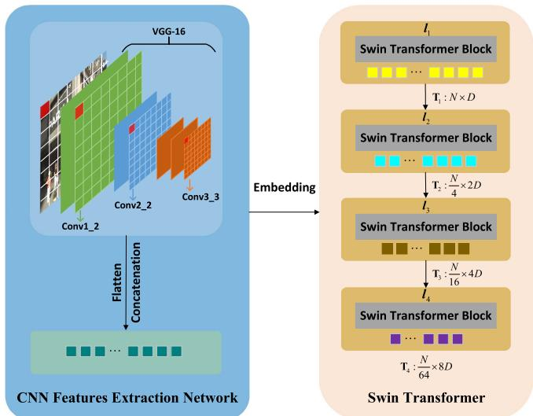
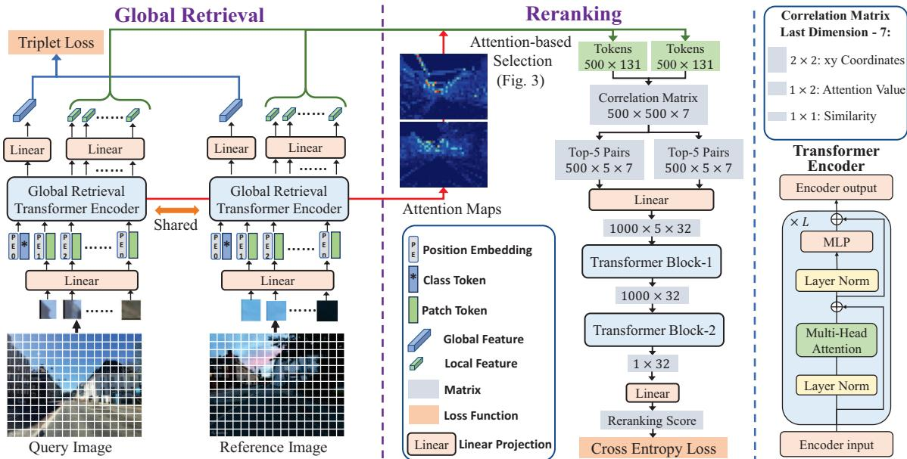
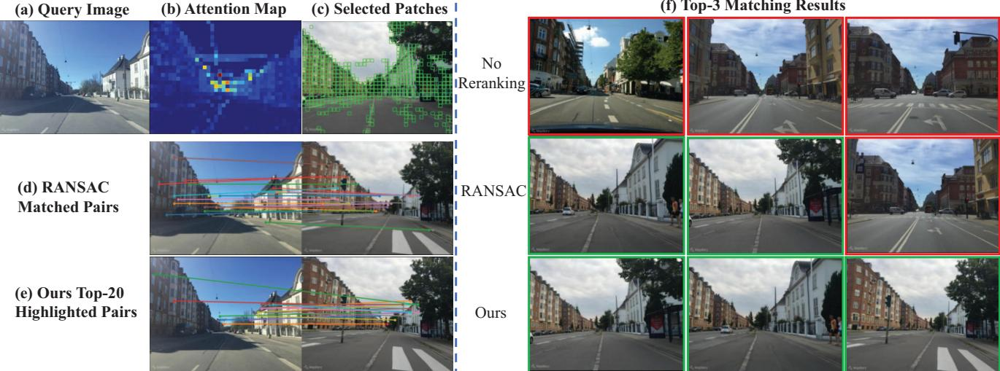

原图注（Fig. 1）：Overview of the proposed methods. The hybrid CNN-Transformer first obtains feature maps rich in local details through a shallow CNN, divides the input image and CNN feature maps into the same number of patches, and concatenates the patch features at the same spatial location to acquire pyramid features. Then the flattened feature sequence is input to the Transformer encoder to obtain multi-level output tokens from shallow to deep stages… Finally, the output token sequence is chunked and viewed as token maps, which are aggregated through the semantic enhanced NetVLAD layer… 怎么看这张图：从浅 CNN 出局部细节 → 同空间位置 patch 拼接成金字塔特征 → Transformer 出多级 token → 多尺度融合 → 语义增强 NetVLAD 聚合成全局描述子。这条「CNN 局部 + Transformer 上下文 + 语义」链就是混合架构的全景。

原图注（Fig. 2）：Schematic diagram of the hybrid CNN-Transformer feature extraction network. The left of the figure is the VGG-16 spatial pyramid convolutional feature extraction network. The green, blue and orange squares represent the Conv1, Conv2 and Conv3 layers of VGG-16, respectively. The right of the figure is the Swin Transformer model. 怎么看这张图：左边 VGG-16 三层（绿/蓝/橙=Conv1/2/3）出金字塔特征，右边 Swin Transformer 建模长程依赖。CNN 与 Transformer 左右并置、信息在多层 token 上融合——直观展示「局部细节」与「空间上下文」如何互补。
原图注（Fig. 1，正文描述）：…we integrate the global retrieval and reranking into one unified framework employing only transformers (Fig. 1), abbreviated as R²Former… The global retrieval is tackled based on the class token without additional aggregation modules and the other image tokens are adopted as local features. 怎么看这张图：一个 ViT 同时出 class token（全局检索）和 patch token（局部特征），后者喂重排序模块。检索与重排在「同一个前向」里完成，共享 backbone——这就是「统一框架」的含义，也是它比「CNN 聚合 + 独立 RANSAC」更省显存的原因。

原图注（Fig. 2）：An overview of the proposed framework. Both the global and local features are extracted as the class token and patch tokens, followed by dimension reduction using linear layers. The important local features are then selected based on the attention map (Fig. 3) and fed into the reranking module. Both the global retrieval and reranking modules consist of only transformer and linear layers. 怎么看这张图：class token → 全局特征（检索）；patch token → 降维 → 按 attention 选 Top-500 重要局部特征 → 关联矩阵 → 重排序模块。整条链只有 Transformer + 线性层，没有一个额外聚合模块，干净且高效。

原图注（Fig. 4）：…we show a detailed case where the global retrieval fails on the top-3 results. Fig. 4 (b) and (c) show the attention map and the selected patches… Both RANSAC and our method work well on reranking the top-100 candidates and our method finds more correct reference images in the top-3 results. 怎么看这张图：全局检索在 top-3 翻车时，重排序模块（基于 attention 选的重要 patch + 关联矩阵）把正确参考图拉回 top-3。这直观展示了「两阶段」的价值：检索漏的，重排序补——但也说明若聚合本身够好（如 SALAD），也许根本不需要这步。
互动判断
关于「单阶段 vs 两阶段」检索，下面哪种说法最准确？
5. 和前面课程怎么接 + 本块收束
把 0138–0139 四篇图像 VPR 方法放进「检索范式三分」看：
范式
方法
聚合 / 关键
代表数字
单阶段检索
CricaVPR / SALAD / Hybrid
跨图关联 / OT 聚合 / CNN-T+语义
SALAD MSLS-ch 75.0
检索+重排序
R²Former
ViT class/patch + 关联 Transformer
MSLS-ch 73.0
检索+位姿
LCR-Net（0140）
NetVLAD 检索 + Sinkhorn 位姿
KITTI AUC 0.958
本块（0134–0139）收束判断（这是判断，不是原文自评）：图像 VPR 的「检索」一侧，深度学习确实把 0134 DBoW2 那套手工词袋吃掉了——而且吃法不止一种（跨图关联、OT 聚合、混合架构）。但「单阶段 vs 两阶段」没有单调优劣：SALAD 单阶段反超 R²Former 两阶段，说明「聚合质量」常是瓶颈；两阶段在极端感知混叠下仍有价值。激光侧（0135–0137）则更多是「免训练几何描述子 vs 学习式」的拉锯，且大多不出位姿。真正的「回环 + 重定位一体」与「假阳性铁律复查」，要交给 0140 LCR-Net。